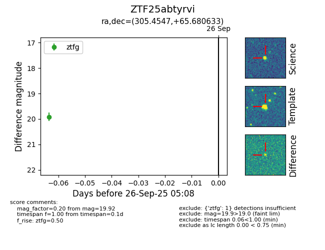

FINK: ZTF25abtyrvi
Lasair: ZTF25abtyrvi
ALeRCE: ZTF25abtyrvi
ZTF25abtyrvi (ztf,fink)
equatorial (ra, dec) = (305.4547,+65.68063)
galactic (l, b) = (99.6395,+15.94410)

last ztfg=19.92
1 ztfg detections